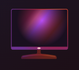

지금 뜨는 영화
가입해야하는 또 다른 이유
TV로 즐기세요
스마트 TV, PlayStation, Xbox, Chromecast, Apple TV, 블루레이 플레이어 등 다양한 디바이스에서 시청하세요.
즐겨 보는 콘텐츠를
저장해 오프라인으로
시청하세요
간편하게 저장하고 빈틈없이
즐겨보세요.
다양한 디바이스로
시청하세요
각종 영화와 시리즈를 스마트폰, 태블릿, 노트북, TV에서
무제한으로 스트리밍하세요.
어린이 전용 프로필을 만들어 보세요
자기만의 공간에서 좋아하는
캐릭터와 즐기는 신나는 모험.
자녀에게 이 특별한 경험을 선물하세요.주플릭스 회원이라면
무료입니다.
지금 뜨는 드라마
자주 묻는 질문
주플릭스는 장편 영화, 다큐멘터리, 시리즈, 애니메이션, 각종 상을 수상한 넷플릭스 오리지널 등 수많은 콘텐츠를 확보하고 있습니다.
마음에 드는 콘텐츠를 원하는 시간에 원하는 만큼 시청하실 수 있습니다.
주플릭스 콘텐츠를 한번 살펴보세요.
주플릭스는 각종 수상 경력에 빛나는 시리즈, 영화, 애니메이션, 다큐멘터리 등 다양한 콘텐츠를 인터넷 연결이 가능한 수천 종의 디바이스에서 시청할 수 있는 스트리밍 서비스입니다.
저렴한 월 요금으로 원하는 시간에 원하는 만큼 즐길 수 있습니다. 무궁무진한 콘텐츠가 준비되어 있으며 매주 새로운 시리즈와 영화가 제공됩니다.
스마트폰, 태블릿, 스마트 TV, 노트북, 스트리밍 디바이스 등 다양한 디바이스에서 월정액 요금 하나로
주플릭스를 시청하세요. 멤버십 요금은 월 5,500원부터 17,000원까지 다양합니다.추가 비용이나
약정이 없습니다.
언제 어디서나 시청할 수 있습니다. 주플릭스 계정으로 로그인하면 PC에서 juflix.com을 통해 바로 시청할 수 있으며,
인터넷이 연결되어 있고 주플릭스 앱을 지원하는 디바이스(스마트 TV, 스마트폰, 태블릿, 스트리밍 미디어 플레이어, 게임 콘솔 등)에서도 언제든지 시청할 수 있습니다.
iOS 또는 Android용 앱에서는 좋아하는 시리즈를 저장할 수도 있습니다. 저장 기능을 이용해 이동 중이나 인터넷에 연결할 수 없는 곳에서도 시청하세요. 넷플릭스는 어디서든 함께니까요.
주플릭스는 부담 없이 간편합니다. 성가신 계약도, 약정도 없으니까요. 멤버십 해지도 온라인에서 클릭
두 번이면 완료할 수 있습니다. 해지 수수료도 없으니 원할 때 언제든 계정을 시작하거나 종료하세요.
멤버십에 주플릭스 키즈 환경이 포함되어 있어 자녀가 자기만의 공간에서 가족용 시리즈와 영화를 즐기는 동안 부모가 이를 관리할 수 있습니다.
키즈 프로필과 더불어 PIN 번호를 이용한 자녀 보호 기능도 있어, 자녀가 시청할 수 있는 콘텐츠의 관람등급을 제한하고 자녀의 시청을 원치 않는 특정 작품을 차단할 수도 있습니다.